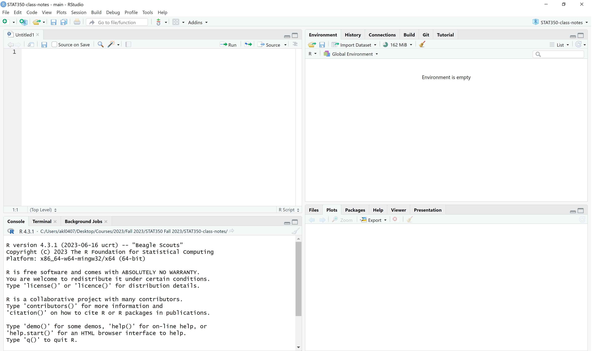
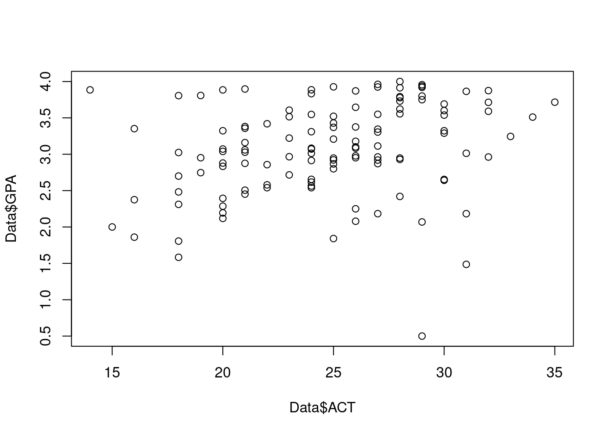
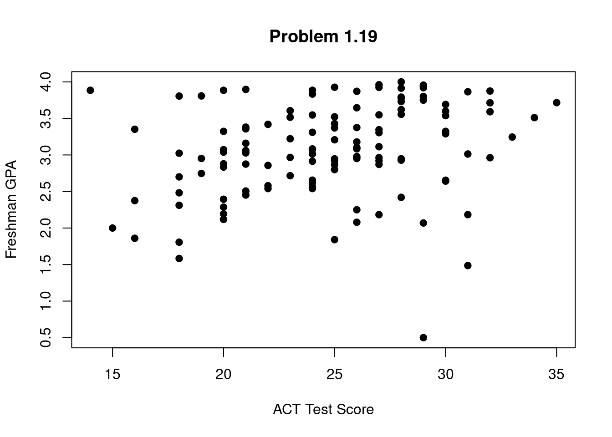
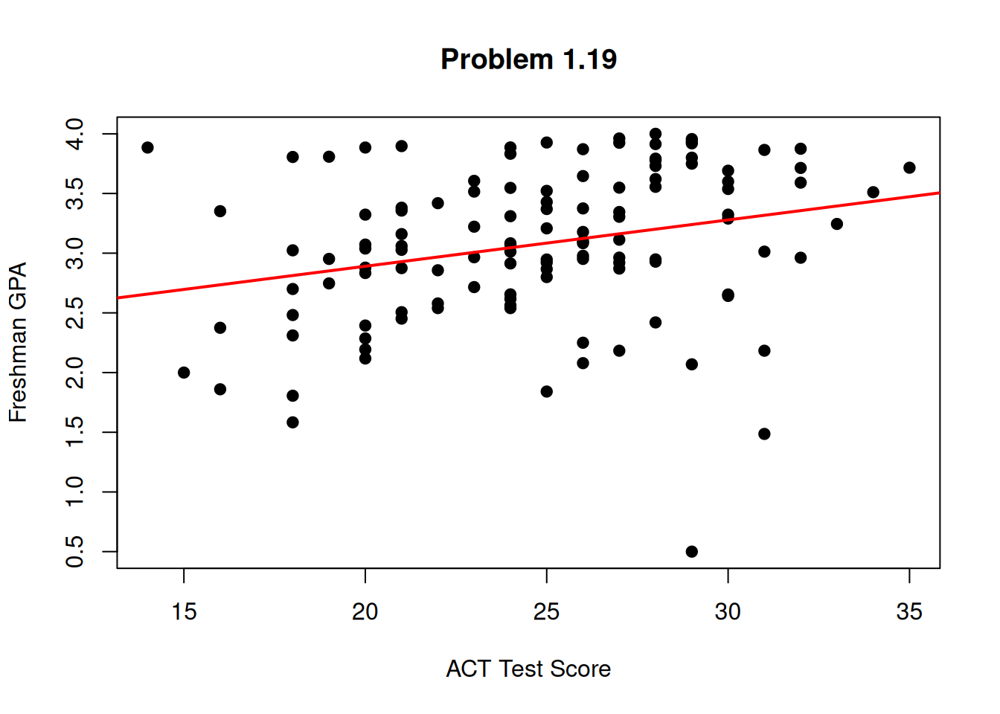
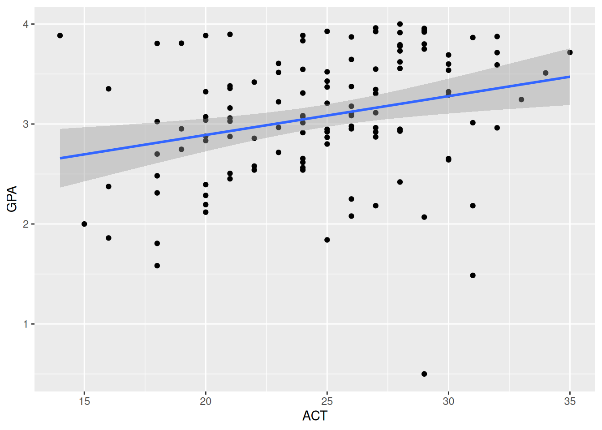

Data <- read.table("./Datasets/CH01PR19.txt")1 R: Introduction
1.1 Installing R
Go to the The Comprehensive R Archive Network (CRAN)

Under “Download and Install R,” choose “Linux,” “MacOS X” or “Windows.” If you choose Windows, on the next page choose “base,” and on the following page choose “Download R 4.3.1 for Windows” to download the setup program.
If you choose MacOS X or Linux you will need to read through the instructions to find the downloads you need for your machine.
Once you have downloaded the setup program, execute it and follow the instructions for installing R on your system. If you have an earlier version of R already installed, you may continue to use it, or you can uninstall it and then install the most recent version, which is R 4.3.1.
1.2 Installing RStudio
https://rstudio.com/products/rstudio/download/
Choose your version: RStudio Desktop, Open Source License, Free. It is strongly recommended that you use the latest release of RStudio (v2023.06). After you install RStudio, you can double click on it and open:

Usually you will want to import data from a file corresponding to data associated with a homework problem. Such a file will usually end with the extensions *.txt or *.dat. The data files for this course will always be available on the CD that comes with the text and/or on the course web page. A data file will consist of columns of numbers, with nothing separating the columns but “white space.” If each column has a title on top describing what the data in the column represents (e.g., age, weight, income, etc.), we will say that the file has a header.
1.3 Working directory
The easiest way to import the data into R and have it readily available for the current and future sessions is to first save the data file into your working directory. For example mine is C:\stat350.
To set up the working directory, select the project option by choosing File menu, then New Project, and then Create Project from Existing Directory.
To start writing a new R script, navigate to the New File option in the File menu, and select Quarto Document. This will create a *.qmd file. You can write both code and formatted-text in this document. When working on assignment / exam problems, you will work on the *.qmd file, render it as HTML and then submit. You can view some examples on how to write R code and text in a *.qmd file and render it as HTML here.
For rough work, i.e., work that won’t be graded, you may use the R script option to write code.
1.4 Getting started with code
1.4.1 Reading data
Suppose you want to work with the data from Problem 19 of Chapter 1, which is in a file named CH01PR19.txt which you have saved from the CD or the course web page in the Datasets folder within your R working directory. Assume the file has no header. You will want to create a Table object in R containing this data. First choose an appropriate name for the table. Assume you choose to name it Data. Then, you can execute the following code :
Then there will be a Table object in R named Data containing the data in rows and columns. To view it, you would type
DataHowever, if it is a large file, you might not be able to view the whole table at once. In that case, you may use the head() function, which will display only the first 6 rows of Data:
head(Data) V1 V2
1 3.897 21
2 3.885 14
3 3.778 28
4 2.540 22
5 3.028 21
6 3.865 31Note that, in the absence of a header, the columns will be named V1, V2, etc., and the rows will be numbered.
Now if the file does have a header (which you may have added yourself), you need to change the above command to:
Data <- read.table("CH01PR19.txt", header=TRUE)In this case, when you view the file you will see the title for each column at the top of each column instead of V1, V2, etc. R regards these titles as names for the columns, and not as data.
If you want to load the data file from some other directory, you need to type the full path name in the read.table() command. For instance,
Data <- read.table(file="C:/stat350/CH01PR19.txt", header=FALSE) You may read data manually as well. Here both Return and New are vectors.
Return <- c(74,66,81,52,73,62,52,45,62,46,60,46,38)
New <-c(5,6,8,11,12,15,16,17,18,18,19,20,20)1.4.2 Renaming columns
Now suppose the file Data has two columns, and the first column is the GPA, while the second column is ACT score. If you would like to rename the columns in your R data table so that each column has a descriptive title, you could give the R command:
names(Data) <- c("GPA", "ACT")Then when you view the file the titles of the columns will have the new names you assigned:
head(Data) GPA ACT
1 3.897 21
2 3.885 14
3 3.778 28
4 2.540 22
5 3.028 21
6 3.865 31Note that you can also give the columns these titles in the data file before you load it into R, and then use the header = TRUE setting when loading. Also, to avoid errors, you should never include a space in the title of any column
1.4.3 Exporting data
Suppose you wish to export Data to file Intro.csv in your folder.
write.table(Data, "C:/stat350/Intro.csv", col.names=TRUE, sep=",")Suppose you wish to export Data to Intro.txt with a tab delimiter:
write.table(Data, "C:/stat350/Intro.txt", col.names=TRUE, sep="\t")You may export R objects to other file types in a similar manner.
1.4.4 R environment
If you want to see which R objects are currently in your R environment, you can type:
ls()You may also see these objects at the top right corner of the R Studio interface.
If you no longer need one or more of these objects, you can remove them. For instance, if you are done with Data, you can type:
rm(Data)Then Data will no longer be in your current R environment. When you quit R, if you wish to keep all the new objects in your current R environment, be sure to answer Yes when asked, Save workspace image?
1.4.5 Scatter plots and simple linear regression
Suppose the data for Problem 19 of Chapter One has been stored in an R object named Data which has two columns, the first column named GPA and the second column named ACT. You want to make a scatterplot in R with ACT scores on the horizontal axis and GPA on the vertical axis. The R command is:
plot(Data$ACT, Data$GPA)
Note that the dollar sign is used to reference either column in the table named Data. The first argument to the plot() function is the column corresponding to the variable associated with the horizontal axis, and the second argument is the column corresponding to the variable associated with the vertical axis. Alternately, you could define two new vector variables, X and Y, to hold the data of the individual columns, and use these vectors as the arguments to the plot() function:
X <- Data$ACT
Y <- Data$GPA
plot(X, Y)For now we will stick with the former approach. The resulting plot appears in the R Graphics Device within the R interface. Click on it to view it, save it, print it, etc.
Note that whenever you make a new plot the old one will disappear (this can be changed; but not easily), so save it if you don’t want to lose it. However, the current scatterplot is inadequate. It has no title, the axis labels aren’t very informative, and the points are open circles rather than dark filled-in circles. To fix this, we can add some additional settings to the plot() command:
plot(Data$ACT, Data$GPA, main="Problem 1.19", xlab="ACT Test Score", ylab="Freshman GPA", pch=19)
Now we obtain a much nicer scatterplot.
Whatever you put in quotes after main = will be the title for the plot. Whatever you put in quotes after xlab = and ylab = will the the labels for the horizontal and vertical axes, respectively. The number after pch = is a code for the symbol to use for the points. You can try other numbers from 1 to 25. You can also use any symbol on your keyboard for the points, including numerals and letters, using quotes. For instance, if you want to use an asterisk for the points, type pch="*".
You may want to also add a plot of the estimated regression function to the scatterplot of the data. This assumes you have already obtained the least squares estimates of the regression coefficients (see “Simple Linear Regression in R”).
fit <- lm(Data$GPA ~ Data$ACT)
fit <- lm(GPA~ACT, data=Data) # another option
plot(Data$ACT, Data$GPA, main="Problem 1.19", xlab="ACT Test Score", ylab="Freshman GPA", pch=19)
abline(fit, col = "red", lwd = 2) #lwd is for line-width
The line will appear superimposed over the data. You can also just type the actual values for the estimated intercept and slope if you prefer.
You may also use ggplot2 to make plots if you wish. ggplot() has a more intuitive syntax as it is based on the Grammar of Graphics, and also has more comprehensive formatting options.
library(ggplot2)
ggplot(Data, aes(x = ACT, y = GPA))+
geom_point()+
geom_smooth(method = "lm")`geom_smooth()` using formula = 'y ~ x'
labs(
title = "Problem 1.19"
)$title
[1] "Problem 1.19"
attr(,"class")
[1] "labels"To save your plot, click anywhere on the plot, then on the menu bar choose File, then Save as. Choose the format in which you want to save the plot, then where you want to save it on your drive.
Check the estimates for the intercept and slope:
fit
Call:
lm(formula = GPA ~ ACT, data = Data)
Coefficients:
(Intercept) ACT
2.11405 0.03883 Compute fitted values:
fit$fitted.values Compute residuals:
fit$residualsCompute the estimate of \(\sigma^2\), that is, the MSE:
n <- dim(Data)[1]
sum(fit$residuals^2)/(n-2)[1] 0.38828481.5 Formatting *.qmd file:
Before Quarto, *.Rmd files were commonly used to render HTML files with R code and formatted-text. This Cheatsheet is for formatting *.Rmd files. However, you may use it to format *.qmd files as well.
1.6 Some references about using R:
100 page Introduction to R from the R website http://www.ics.uci.edu/~jutts/st108/R-intro.pdf
Practical Regression and Anova using R, by Julian Faraway http://cran.r-project.org/doc/contrib/Faraway-PRA.pdf
R code by Bryan Goodrich for Kutner et al., Applied Linear Statistical Models 5th ed: https://rpubs.com/bryangoodrich